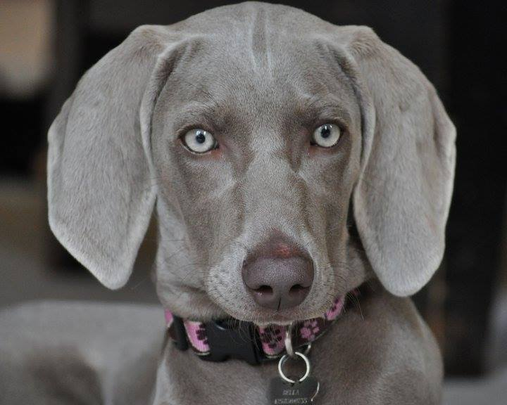

Our Pets!
Buck
He is a two year old Border Collie who enjoys chasing anything that moves.

Soba
She is a three year old Domestic Long-Hair who loves eating plants and chasing laser pointers.

How do we compare?
| Name |
Breed |
Favorite activity |
Age |
| Soba |
Domestic long-hair cat |
Eating plants and chasing the laser pointer |
3 |
| Buck |
Border Collie |
Chasing anything that moves |
2 |
>
Bella
Bella is a Weimaraner.
She loves to hunt, play, and bark at birds!
Fun fact: weimaraners are named Grey-Ghosts, for their short and smooth grey hair.

Fun facts about us
Listed in alphabetical order:
Bella. This is my fun fact!
Buck: A fun fact about me is that I have two siblings, my brother Grif and my sister Dare!
Soba: A fun fact about me is that I'm a shelter kitty. Adopt, don't shop :)
PLACEHOLDER DOG. This is my fun fact!